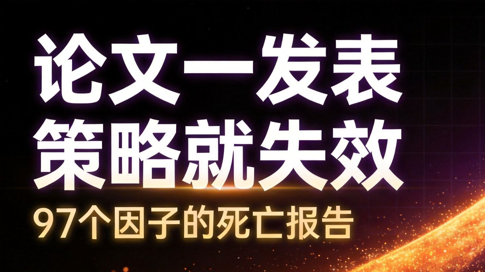
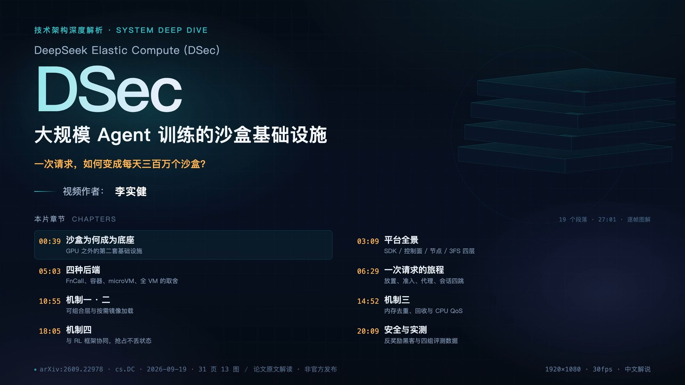
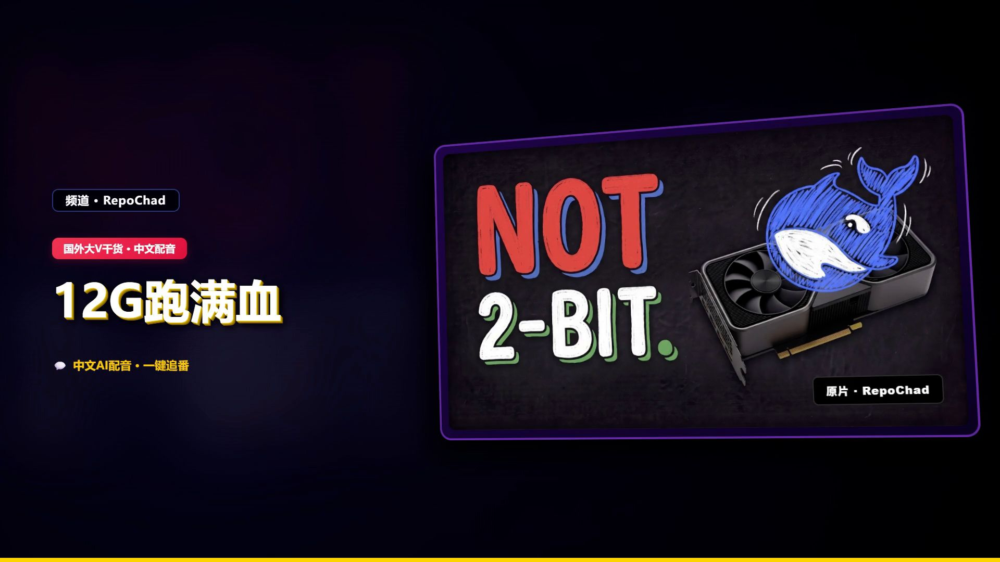
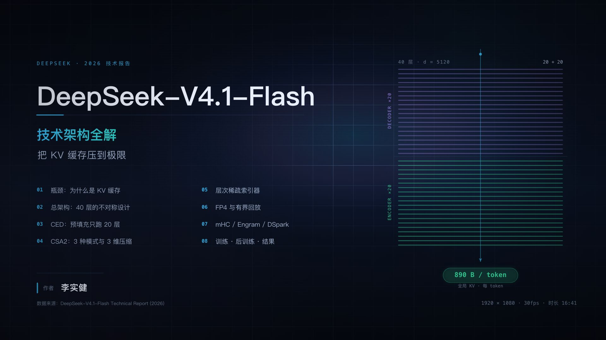
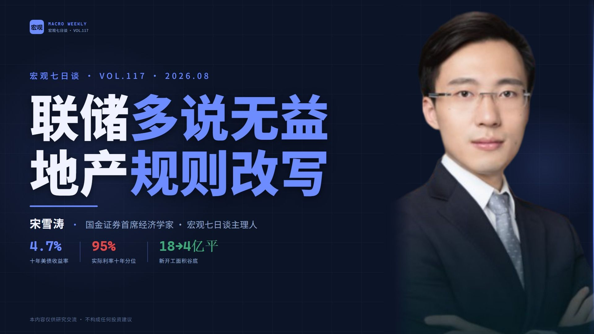
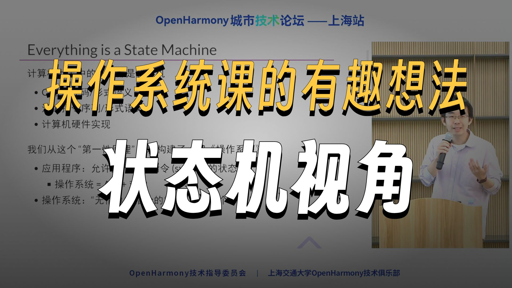
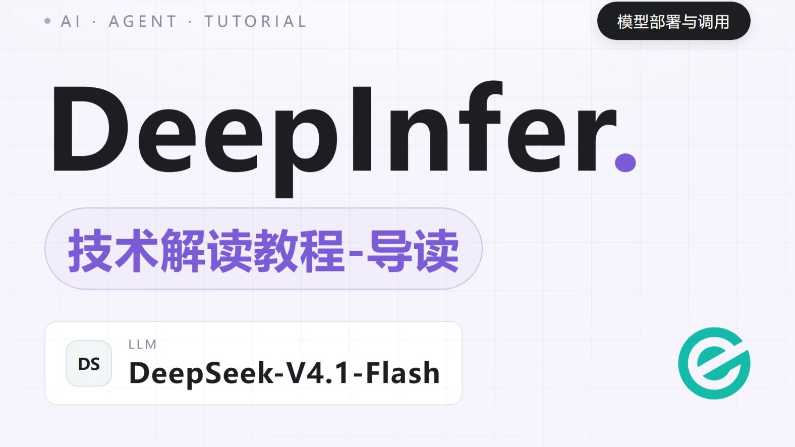

AgentBaton 让强模型先做长程任务核心，再由轻量检测器判断交接时机，把局部修复与收尾交给小模型；两个基准、11 组模型对平均降 65.9% API 成本，精度基本不降，部分组合更高。
熊二等兵 · 2026-11-11美债利率走高是表象，主线是 AI 融资虹吸全球流动性、抬高实际利率；日本杠杆和减持美债是放大器；真正黑天鹅在分子——OpenAI ARR 环比仅 +18%、Anthropic 收入低于预期，AI 收入兑现才是关键。
合纵观察 · 2026-11-11DeepSeek V4.1 推理架构拆解：PD 分离 + 3FS 池化 KV、EPLB 专家负载均衡、DPLB 数据并行负载均衡；EPLB 端到端约 2%，prefill 收益 4–6%，DSpark 验证长度 5 降到 3.2–4.4。
vllm_project · 2026-11-09
97 个因子：样本外 -26%、发表后 -32%、累计 -58%；前一段是过拟合，后一段是套利拥挤。五层应对：回测打折、看近 3–5 年、分真假衰减、生命周期监测、低相关组合+收缩。
量策实验室 · 2026-11-07
DSec 是 Agent 训练的第二套基础设施：300 万沙盒/天、38 万并发、5000+/秒创建；四种后端、组合式镜像、3FS 按需加载、virtio-pmem/DAMON、SCHED_IDLE+core scheduling、与 RL 抢占恢复协同。
KianLee · 2026-11-07
Strata 跑 2-bit（46GB 内存起）、Prometheus 跑原始权重（7.4 tok/s，但仅 Windows/RTX30/40、64GB 内存、1.1TB SSD）、llama.cpp 在 12GB 卡还不行；32GB 内存只能干等。
翻车老头 · 2026-11-07
1M 上下文每 token 全局 KV 890 字节，约为 V4-Flash 的 1/4；CED 预填充减半、CSA2 三维压缩、FP4 主 KV、有界回放四层叠出来。
KianLee · 2026-11-06
十年美债 4.7% = 2.4–2.5% 实际利率（95% 分位）+ 2.2–2.3% 通胀预期；长端高是 AI 虹吸，不是通胀。地产新规把预售/首付/按揭/拿地/开发贷五道杠杆一次封死。
连横财经 · 2026-11-05150 行 agent demo 不能当产品；DSH 用 microkernel + append-only session + event bus 换插件生态，但消不掉 essential complexity。
绿导师原谅你了 · 2026-11-04
用 50 行玩具 OS + 500 行模型检查器复现教科书并发/崩溃例子，再提出把 Linux 6.0 状态映射回简单模型的逆 refinement。
西安数学张老师 · 2026-11-04Codex 长任务拆成会话/轮次/请求-工具/命令进程四层；长命令观察窗口、输出缓冲、压缩持久化、Goal 模式与恢复边界。
AI架构师Leo · 2026-11-04
P/D 分离、KVCache 独立存储 72 小时、SWA 有界重放、DSpark 推测解码，96% 缓存命中背后的成本账。
eogee · 2026-11-04